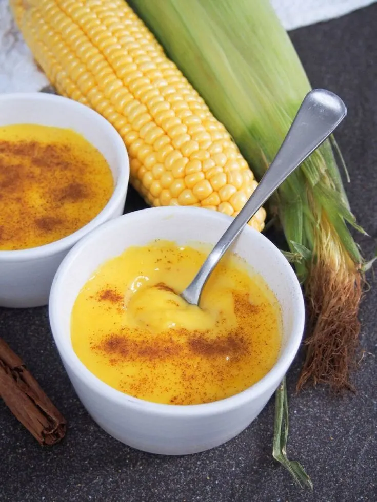

Curau de Milho (Brazilian Corn Pudding)
Ingredients
- 3 cups fresh corn (cut from 2 - 3 ears of corn, depending on size)
- 2 cups whole milk
- 1 pinch salt
- 1/2 cup sugar
- Cinnamon, to serve
Steps
- Cut the kernels from the ears of corn and measure them out. As well as the main kernels, you can scrape the husk with the back of a knife to get all the last little bits out (this part often has more of the starch that helps the pudding to thicken).
- Place the corn in a blender with the milk and blend until smooth.
- Strain the solids out of this mixture by pouring the corn milk through a strainer or colander lined with cheesecloth, a little at a time so it doesn't overflow. Stir and press the corn solids so that you get as much liquid from them as possible. When you have most of the liquid out, gather together the corners of the cheesecloth and squeeze well to get as much liquid out as possible. (You can also just use a fine strainer, but it is easier to squeeze all the liquid out using the cheesecloth.)
- Place the strained corn milk into a wide, relatively large pot with the sugar. Stir to help the sugar dissolve. Place the pot over a medium heat and bring the mixture to a simmer, stirring to dissolve the sugar.
- Simmer the mixture for around 15-20 minutes, stirring regularly at first, then continuously towards the end to prevent the mixture sticking and burning on the bottom, until the mixture thickens to the consistency of a semi-thick custard or pudding.
- Divide the mixture between individual dishes and serve warm, or refrigerate and serve chilled. Either way, topped with a sprinkle of cinnamon.
Description
Brazilian corn pudding, curau de milho, is an easy and tasty dessert made with just three ingredients. It’s a little like a pudding or custard but with a warm yellow color and flavor from the corn.
Back to HomePage